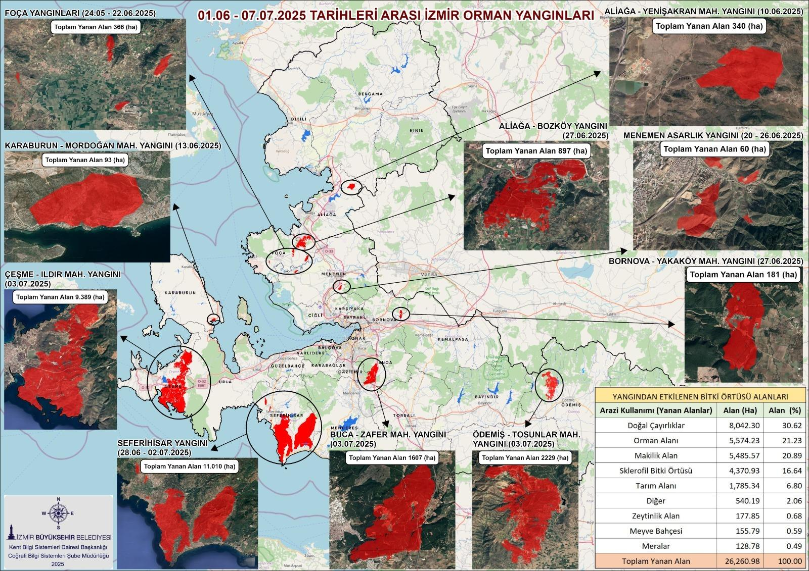
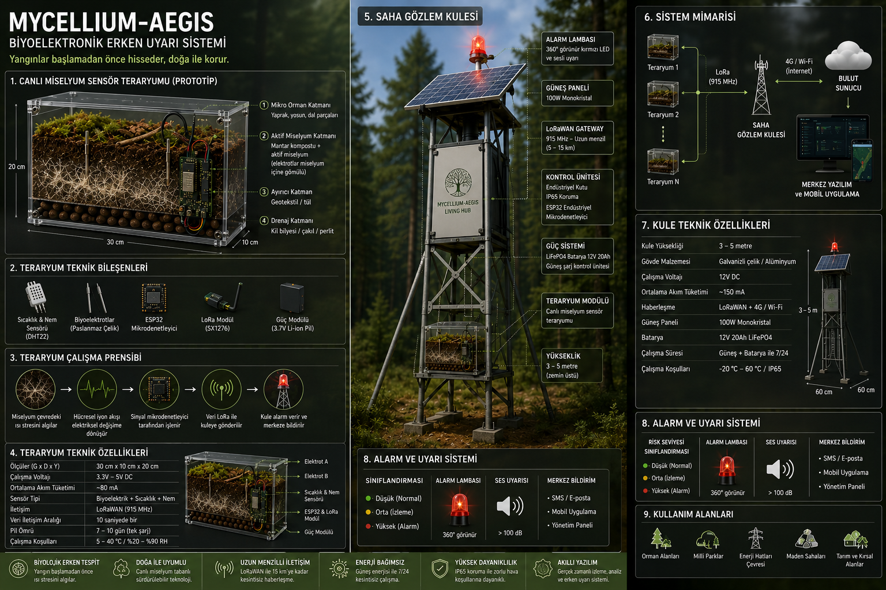
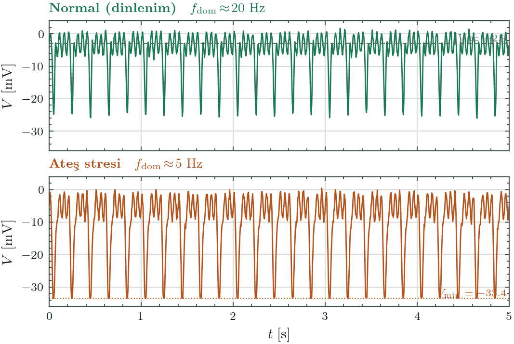
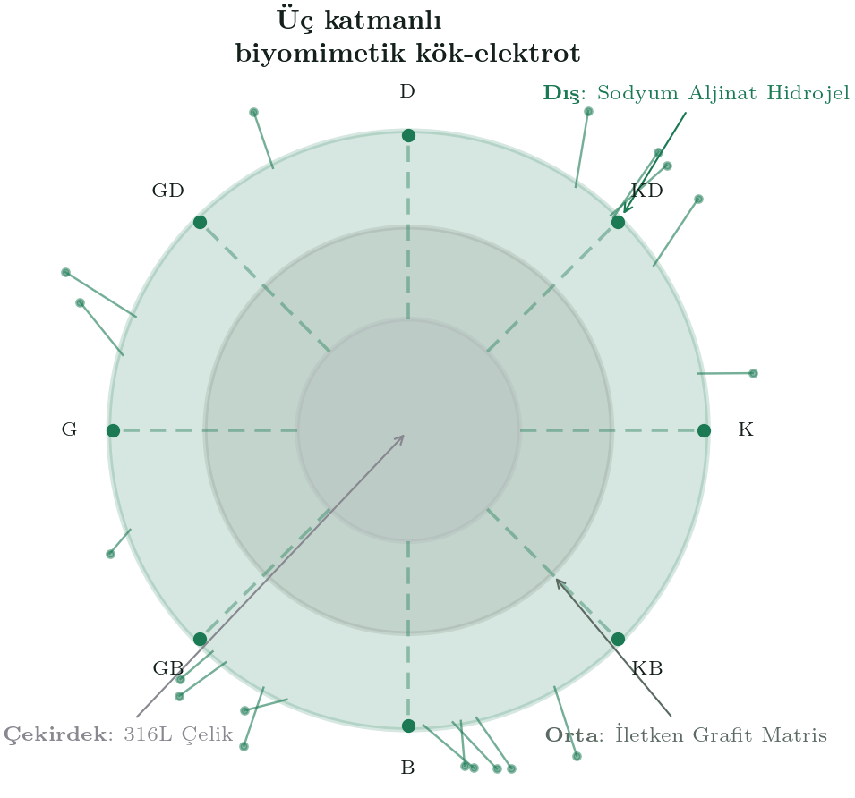
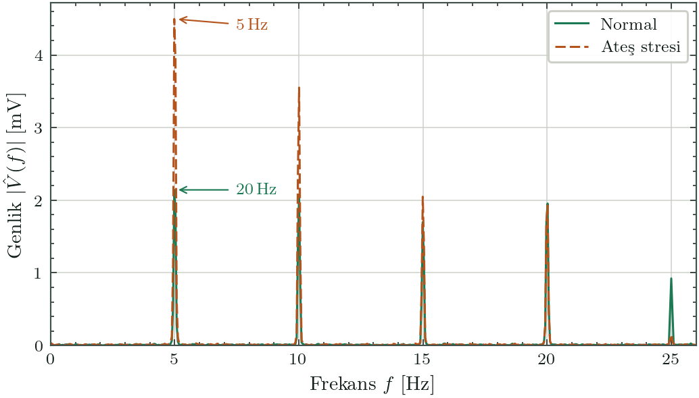
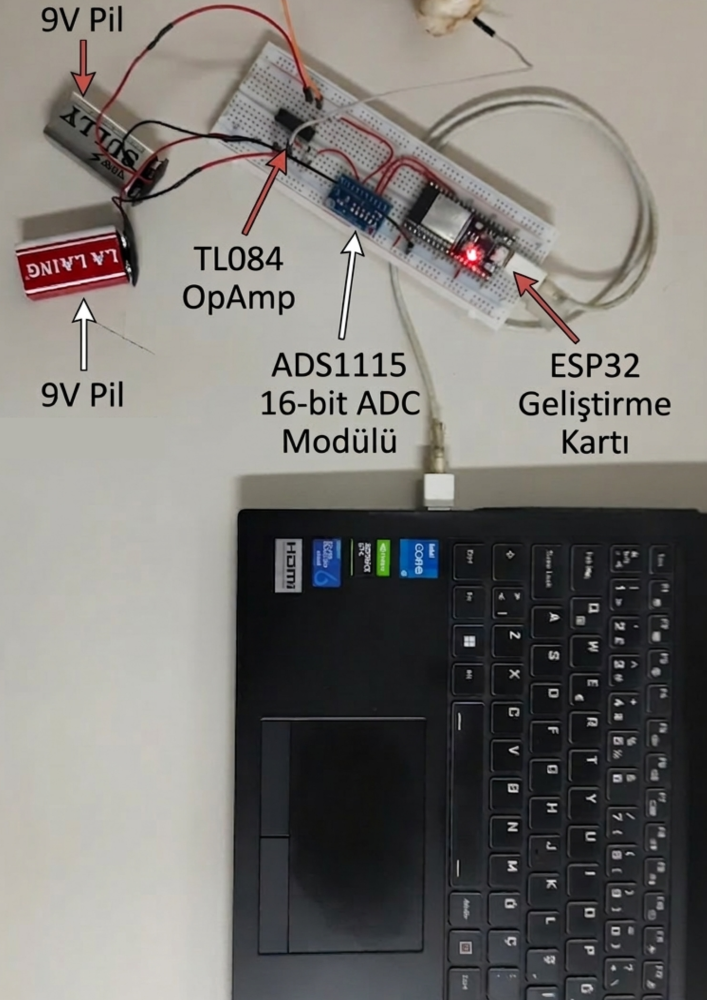
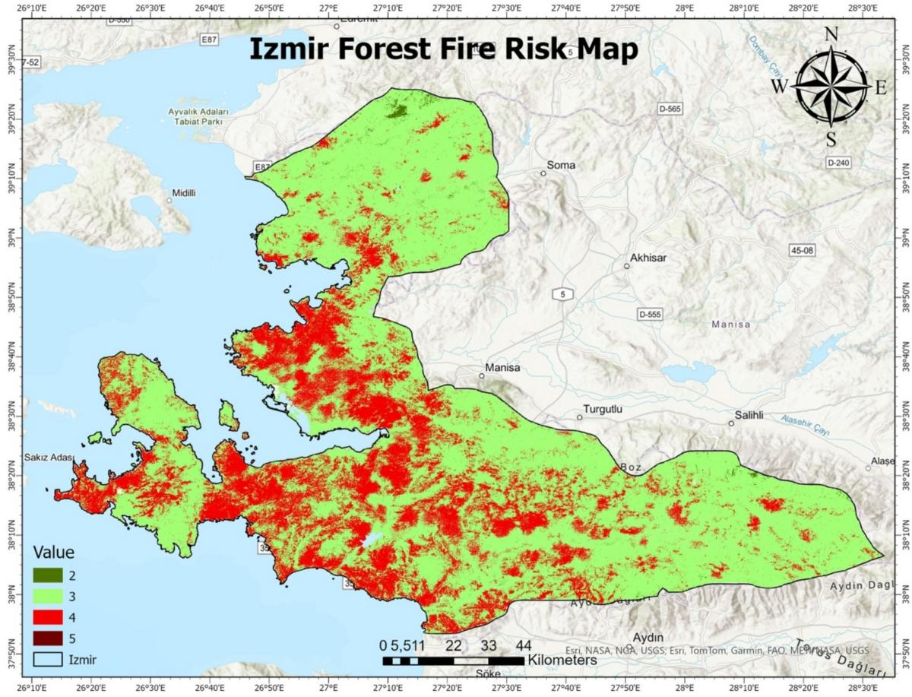
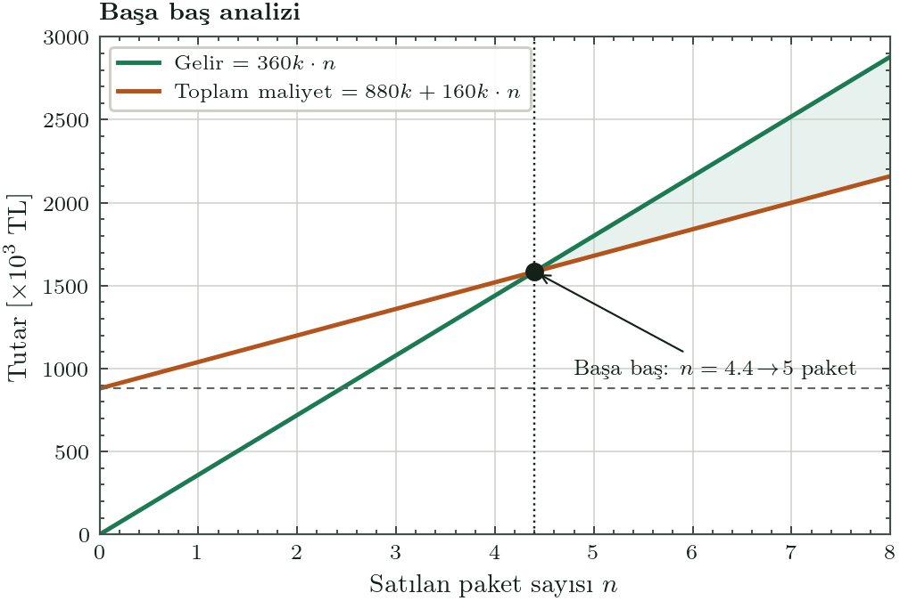

Mycellium-Aegis
Ormanın kendi biyolojik ağını canlı bir yangın sensörüne dönüştürüyoruz.
Toprak altındaki mantar miselyumu, ısıya elektriksel tepki verir. Biz bu sinyali yerin 15–20 cm altında okuyup, yangını duman ve alev daha ortaya çıkmadan yakalıyoruz — üstelik hangi yönden geldiğini de söyleyerek.
Bugünün sistemleri yangını ancak görünce anlıyor.
Uydu, kule kamerası ve gaz sensörleri reaktiftir — tehlikeyi ancak alev ya da duman fiziksel olarak çıktığında görür.
Görüş hattına mahkûm
Yoğun örtü, vadi tabanı ve bulut altında tespit edilemez.
45–90 dk gecikme
Gaz sensörü rüzgârı bekler. Maliyet ve tahribat katlanır.
Ormana gömülen çöp
Lityum pil ve plastik kutular korozyona uğrar.

Dumanı değil, hücreyi dinliyoruz.

- Isı 15–20 cm toprağa ulaşır → miselyum hücreleri elektriksel "spike" üretir.
- 8 kanallı yönsel elektrot sinyali okur ve geliş açısını hesaplar.
- Yapay zeka gerçek yangını rüzgâr/yağmur gürültüsünden ayırır.
- LoRaWAN ile merkeze iletir; yetkili birim henüz duman yokken uyarılır.
Orman zaten konuşuyor — biz dinleme cihazını yapıyoruz.
Ağaçlar arası "Wood Wide Web" ağının yapı taşı mantar miselyumudur. Ani ısı şoku, hücrede koful birleşmesini ve kalsiyum iyon dalgalarını tetikleyerek ölçülebilir aksiyon potansiyellerine dönüşür.

İki katmanlı yenilik: biyomimetik elektrot + sensör füzyonu

- Çekirdek: 316L çelik — mekanik + iletken omurga.
- Orta: iletken grafit matris — pasivasyonu engeller.
- Dış: sodyum aljinat hidrojel — miselyum kolonize eder.
Türevsel sensör füzyonu (AND-gate)
Üç imza aynı anda onaylamadan alarm yok:
Bunu laboratuvarda çoktan doğruladık.


ESP32 + ADS1115 + MCP6022 · Pleurotus ostreatus ve miselyum ağı · Hipotez kanıtlandı.
Büyüyen bir pazarda, net bir basamak planı.

- 1 · Türkiye B2B — enerji nakil & maden şirketleri (ESG uyumu).
- 2 · Avrupa — ormancılık kooperatifleri & kereste sanayi.
- 3 · ABD — doğrulanmış TRL ile Cal Fire ve küresel kamu.
Herkes reaktif. Biz proaktifiz.
| Mycellium-Aegis | Dryad · Silvanet | Pano AI | |
|---|---|---|---|
| Tespit prensibi | Proaktif · hücresel | Reaktif · gaz | Reaktif · görüntü |
| Örtü/vadi altını görür | ✓ yer altından | kısmen | ✕ görüş hattı |
| Yön bilgisi | ✓ 8 kanal yönsel | ✕ | ✕ |
| E-atık / korozyon | ✓ sıfır e-atık | plastik + pil | kule donanımı |
| Gecikme | duman öncesi | 30–60 dk (rüzgâr) | duman görünürse |
Donanım tek seferlik nakit, SaaS tekrarlayan gelir.
Kamu anahtar teslim
OGM ve belediyelere "Aegis-Nexus" paketi ihale ile satılır.
360.000 TL / referans paket
1 ağ geçidi + 100 sensör düğümü + 1 yıl SaaS
Yıllık SaaS aboneliği
Enerji, maden, selüloz tesisleri: donanım düşük marjla girer, asıl kâr yıllık yenilenen risk-analitiği panosundan gelir.
Başa baş için yalnızca 5 paket.

- Birim marj: 360k − 160k = 200.000 TL
- Sabit kurulum (18 ay): ≈ 880.000 TL (makine, kira, IP/regülasyon)
- Başa baş: 880k ÷ 200k = 5 paket → 1.8 M TL ciro
- Çekirdek fon: TÜBİTAK BİGG 1.350.000 TL
Laboratuvardan ilk satışa: TRL 3 → 8.
Biyomimetik elektrot + ısıl-şok doğrulama
Aljinat-grafit üretimi, iklim kabini testleri.
TRL 3→4Yanlış alarm YZ füzyonu
LSTM eğitimi, %99 gürültü izolasyonu.
TRL 4→5Saha korozyon & Mesh testi
3 ay kesintisiz açık hava verisi.
TRL 5→6TÜRKPATENT + OGM protokolü
Patent başvurusu, saha izin protokolü.
IPTicari MVP & ilk satış
B2B/B2G ilk fatura, referans veri.
TRL 6→8Dört disiplin, tek çekirdek ekip.
Mehmet Çetin
Mimari tasarım, Aegis-Nexus formu, kamu ihale & yatırım.
Muhammet Yağcıoğlu
Biyosinyal işleme, PyTorch/LSTM füzyon, SaaS bulut.
Ömer Ünal
Gömülü IoT, PCB, LoRaWAN mesh, düşük güç donanım.
Mahmut Can Göçlü
Biyomateryal kimyası, aljinat-grafit, miselyum kolonizasyonu.
Orman kendi yangınını haber versin.
Teknik derinlik için → Yedek Slaytlar (ayrı basılı kopya)